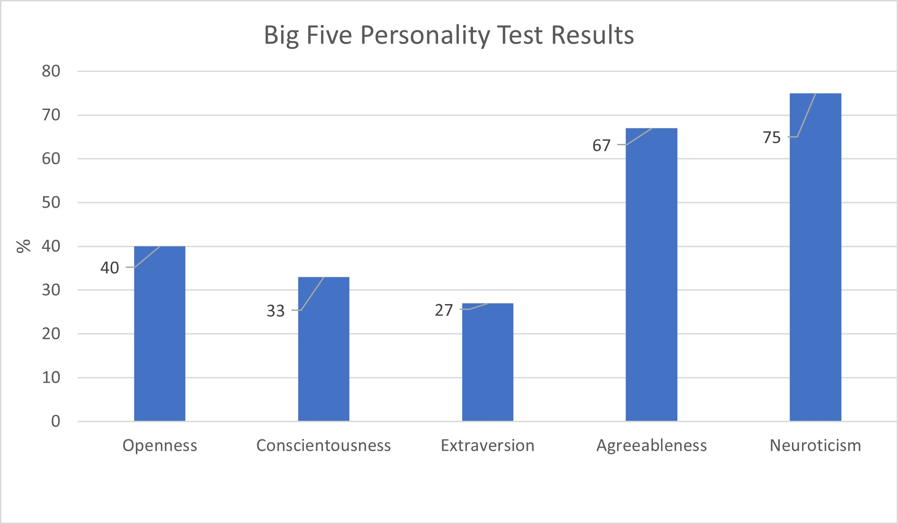

COSC1078 Assignment 1: My Profile
Personal Information
Name: Cameron Mitchell
Student Number: s3971747
Student Email: s3971747@student.rmit.edu.au
 Information: Born and raised in Australia, I have completed Year 12 and previously studied Engineering and Computer Science and Monash (4 years). I only know how to speak English.
Information: Born and raised in Australia, I have completed Year 12 and previously studied Engineering and Computer Science and Monash (4 years). I only know how to speak English.
Fun fact: I have won a football grand final in 2013, in which my dad was the coach.
Interest in IT
My IT interest started when I was in primary school, when I was about 9 to 10 years old, where I became the M.I.C.E (Mentor in Computer Education) for my class. My role was to look after the school computers, while doing extra learning about computer systems. After this, I started to play video games, and really enjoyed the idea of working with computers in the future.
I chose to come to RMIT because I felt like I needed to switch up my approach to studying. Previously studying at Monash during the pandemic, I felt like I was in a slump and needed to find a way out. After thinking about what I wanted to do, I decided that RMIT was the best place to study IT. I have a few friends who studied at RMIT, and they enjoyed their time here, so I thought I should study here too.
I expect to learn many things while studying IT, both in the IT field and general career skills. Some IT skills I would like to learn are how to code and create a video game, as well as being able to understand a lot about IT networks and information management. Some career skills to learn would be how to effectively communicate my thoughts, work as a team more efficiently, and understand what my colleagues require of me.
Ideal Job
My ideal job would involve something to do with video games, either playing, creating or testing them. After doing some research about what I would like to do as my future job, I have found a job description that sounds appealing to me. The job is a 'Quality Assurance Tester'.
Click here to view the job listing.
Description of the job
Description of skills, qualifications, and experience needed
Description of current skills, qualifications, and experience
Plan to obtain these skills
Personal Profile
These images show the results of three different online quiz's that are commonly used by employers. Click on the images to take the tests yourself!

Summary of the 3 quiz's
Project Idea
CLick Here to view the Project Idea page
References